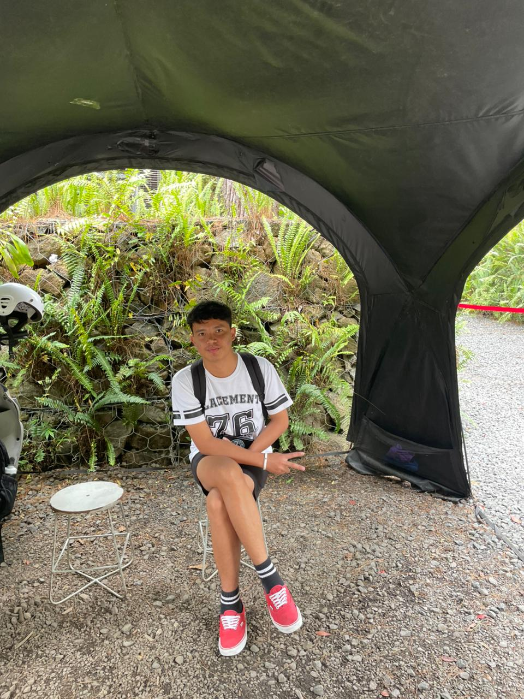

Evan Natanael
Mahasiswa | Sistem Informasi
| NIM | 2582011 |
|---|---|
| Jurusan | Sistem Informasi |
| Hobi | Voli (Volleyball) |
Foto ini diambil saat aku sedang liburan bersama kakakku di Bandung. Kami jalan-jalan dari Unai menuju Harvest dan sangat menikmati suasana alam serta udara yang sejuk di sana. Saat itu tempatnya tidak terlalu ramai, jadi suasananya terasa sangat tenang. Kami betah berlama-lama di sana sampai tidak terasa waktu sudah menunjukkan saatnya untuk pulang.